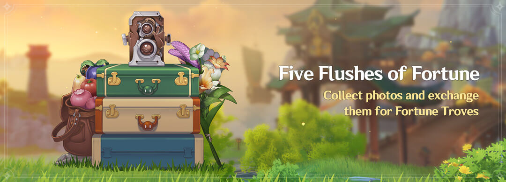
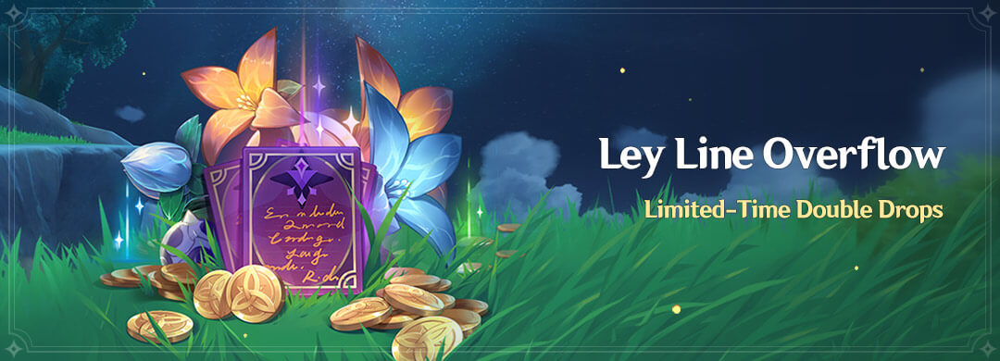
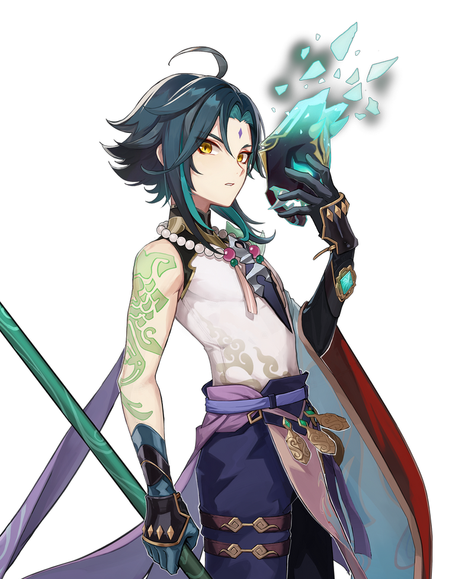
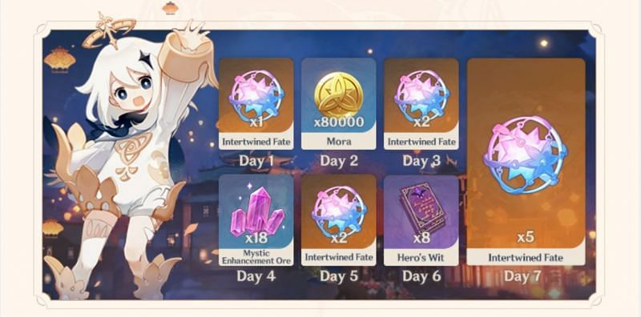
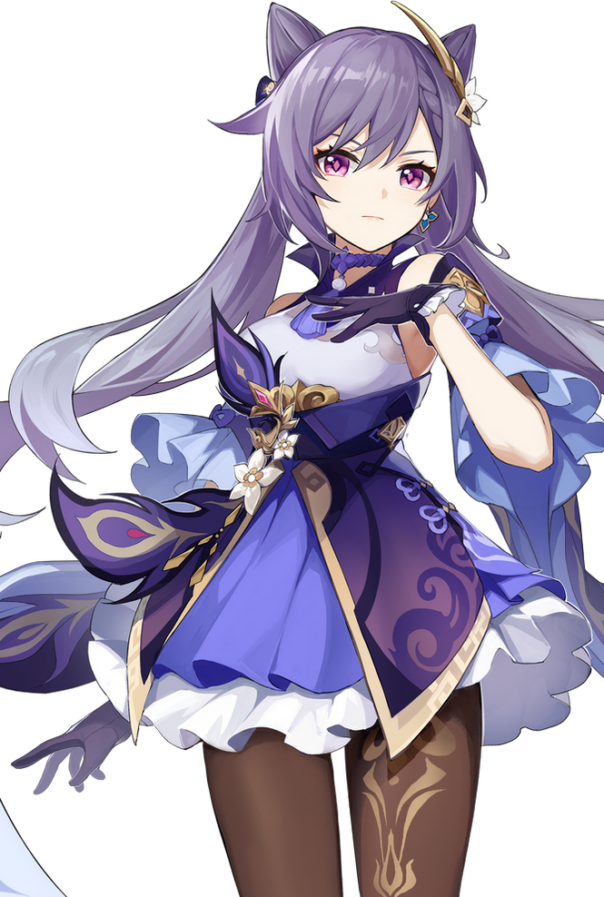

Events


CHARACTERS

Xiao/Alatus
- Mighty and illuminated asksha adeptus who defends Liyue
- Also known as "Conqueror of Demons" and "Vigilant Yaksha"
- "I'm willing to protect you. But don't think about getting too close and stay out of my way, or all that awaits you is regret."
Rewards

Zhongli/Rex Lapius
- Mysterious expert contracted by the Wangsheng Funeral Parlor
- Extremely knowledgeable in all things
- Also known as "God of Contracts"
- "This is an age of gods and monsters. I wish not for dominion, yet I cannot watch the common folk suffer."

Keqing/Driving Thunder
- Seeks her own answers instead of idly letting chaos run amok in Liyue.
- Firmly believes that humanity's future should be determined by humans themselves
- Also known as "Yuheng of the Liyue Qixing"
- "We live in an era of change, as the old order that has existed for a thousand about to be rewritten. Join me. Let us bear witness to this historical moment together."
Ganyu/Plenilune Gaze
- The secretary at Yuehai Pavilion
- A half-qilin Adeptus under contract with the Geo Archon Morax.
- Also known as ""Cocogoat" by fans
- "Sweet Flower, as a food, it's not the healthies option. But feasting my eyes on it works wonders for my mood. So, I cannot permit you to trample these flowers!"
Stand By Me
Complete the Lantern Rite Quests to choose one of the following 4 star Liyue characters for free as part of its event.
Beidou
- the captain of The Crux, a renowned crew in Liyue

Chongyun
- a highly effective exorcist in Liyue

Xiangling
- the Head Chef at the Wanmin Restaurant

Xingqiu
- the second son of the Guild Manager of the Feiyun Commerce Guild, an influential group in Liyue

Xinyan
- a fiery musician in Genshin Impact that roams around the region of Liyue, setting up impromptu concerts

Ningguang
- the Tianquan of the Liyue Qixing and owner of the floating Jade Chamber in the skies of Liyue